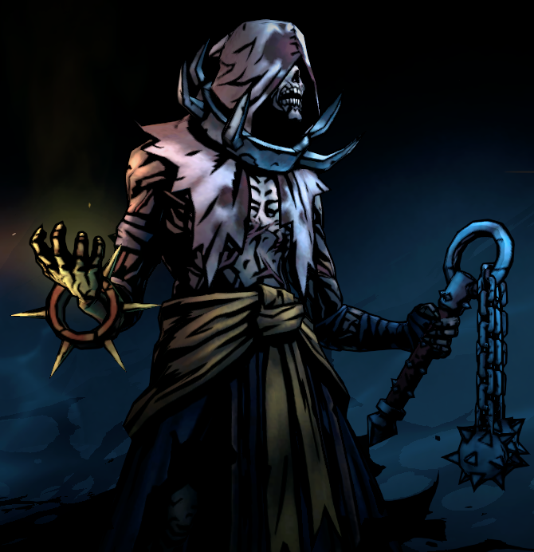

The Plague Doctor, a researcher, an alchemist who highly prefers to be at the back ranks of the team in order to deal DoT (Damage over Time) attacks such as throwing toxic and plague infused potions and grenades. The Plague Doctor serves as one the starting and starting support hero where she can also inflict blindess at foes, while also assisting her team with HP recovery potions and tonics that applies various buffs and effects.
Players will want to have the Plague Doctor at either rank positions 3 or 4 to fully utilize her skills. The Plague Doctor makes use of experimental remedies and risky healing practices to cure her companions' ailments, and restore their vigor. Eager to prove the effectiveness of her latest untested concoction, she will inject herself - blindly faithful in its beneficial results. |
|
|---|---|
 |
The Grave Robber is a versatile hero and excels at being a light-footed combatant, making her as one of the agile heroes of the game. This hero wields a Pickaxe as her melee weapon, as well as daggers and poison darts to poke enemies that are far from her, allowing her to be positioned in any team rank or team line-up. She strikes without warning and retreats to the shadows, continuing her assault at range. The Grave Robber wears a light coat since she favors mobility and dexterity over protection.
In order for the player to utilize her and bring out the best of her abilities, pairing her with other Heroes that are also versatile when it comes to any rank is recommended here, heroes or classes such as the Highwayman or Leper have skills that allow them to exploit their skills in any rank position, and having at least one main tank hero, like the Hellion to taunt enemies or Man at Arms to act as their main defense. |
The Highwayman hero in Darkest Dungeon 2 is a versatile DPS class that can move around the ranks of the team and attack from any position. The Highwayman is described to a rogue, a thief who has honed his skills with dirk and flintlock to devastating effect. Whether at range or in a melee, he is equally effective at dispatching his foes. Be it a grapeshot area-of-effect, or single target bleed, the Highwayman's skills focus solely on dealing damage in a variety of ways.
The selling point of the Highwayman is that he can be placed at any team ranking position. If he is at the back ranks, he can still poke enemies with his Pistol Shot while his Wicked Slice melee skill allows him to attack at the ground. Think of him as the assassin of the group who is capable of finishing off enemies who are at low health or is at Death's Door. The Highwayman's skills such as Wicked Slice ignores Death's Door RES, allowing him to execute a deathblow to completely kill off an enemy.
He is also one of the best starting heroes to have if you are planning on creating a team that focuses on using offensive moves. One of his default skills, Duelist's Advance, allows him to move forward towards the ranks (if needed) which damages enemies in the front rank, as well as applying the Riposte buff which allows him to counter-attack enemies that attack him, twice. This is also a good skill to have in his arsenal which you can also exploit since it doesn't have a cooldown.
|
|
The Man at Arms hero class in Darkest Dungeon 2 is an old, battle-scarred veteran who has seen enough war and bloodshed to last a dozen lifetimes. His defensive prowess makes him a force to be reckoned with on any team, able to draw fire to himself to defend his allies and then retaliate with surprising force. The Man-at-Arms is a seasoned veteran of combat, and has been rewarded for his toil with haunting guilt and stoic resilience in equal measure. Immovable, commanding, and focused, the Man-at-Arms breaks down enemy lines with his mace, shield, and furious battle cries.
The Man at Arms can frequently save a team member who is on death's door and raise the team's overall survivability while managing stress levels. The Man at Arms is a strong addition to any composition, and he is particularly useful for new players. He fills the roles of main tank, support, and secondary melee combatant of the team. |
|
 |
The Hellion hero class in Darkest Dungeon 2 is described to be wild, unpredictable, and utterly ruthless. The Hellion thrills to the spilling of blood! Her massive glaive affords her impressive reach in combat, while its razor sharp edge leaves lasting wounds on enemies. Versatile and unrelenting, she can hit the back row with her blade and devastate her foes. Certain skills leave her exhausted, however, and she may occasionally need to take a turn to recharge her adrenaline before entering the fray once again. The Hellion wears crude leather and furs may offer little protection, but the Hellion lives to bear the scars of battle proudly. Her priority is wreaking havoc with her massive glaive and bathing in the blood of her adversaries.
The Hellion hero class in Darkest Dungeon 2 acts as a primary DPS and Berserker of the team. She longs for battle and it is highly indicated in her skills and positon ranking. The Hellion is a frontline hero class who is highly recommended to be in rank position 1, she is weak if she is pushed back to the back ranks or if you purposely place her at the lower rank positions since all of her attacks consist of punishing enemies at the front and requires her to be placed first. Despite her less being less versatile unlike the Man at Arms hero class, she compensates with her high base DMG value, a decent amount of HP, and above-average value of DODGE and SPEED. Apart from that, since she is also positioned at the front, the Hellion hero class is also capable of attacking enemies that are at the back rank, specifically at enemy positon rank 4, she can attack or even finish off foes that try to retreat at the back. |
Runaway hero class in Darkest Dungeon 2 is the newest hero added in the universe of Darkest Dungeon. She is described as a survivor, a scavenger, and a scrapper. Exemplified by those aspects, she fits easily into lineups in multiple positions. However, she may be best at getting into the action hot and heavy and then using stealth to head back into the lineup to a safer area, perhaps moving a friend closer to the fray. The Runaway excels at disrupting foes, applying flames, and adjusting the flow and positioning of battle.
The Runaway is as versatile when it comes to the flexibility of her skills based on whichever rank position she is in, similar to heroes such as the Jester, Highwayman, and Grave Robber, but what makes her stand up against the roster is that she makes up for it by having one of the most high chance of inflicting CRIT hits which most likely, inflicts the Burn DoT effect to the targeted enemy. She is the team's Pyromancer, and the only thing that is standing between her flaming arrow are enemies that are buffed or have high RES against Burn.
When it comes to team lineup, she is best to be paired up with the Jester hero since choosing certain skills to master will allow you to trigger follow-up combo empowered skills, as well as pairing her up with defensive, support heroes such as the Man at Arms and Plague Doctor heroes will surely keep her alive and increases her survivability rate. Players can also designate her as the primary DPS of the team and have at least one defender or tank type hero like the Leper or Hellion as the secondary DPS hero. She may be able to adapt easily in any situation given, but she is most likely to be targeted by the enemy team and has just a normal amount of health. Apart from having skills that have high CRIT, she is also capable of protecting herself if needed by using skills such as Run and Hide to retreat in stealth as well as healing herself with Cauterize. |
|
The Jester hero class in Darkest Dungeon 2 is jack of all trades who is brings a razor sharp blade, a merry song, and a good laugh as he journeys deep into the darkest depths of these twisted lands. Armed with a sickle and lute, this maniacal minstrel is a versatile class that has several tricks up his sleeves. With his oddly shaped blade he can slice the 2nd and 3rd rank positions of the opposition to ribbons, causing them to bleed out. With his lute he can provide in-battle comfort for his companions, playing songs that inspire greatness or relieve tension. His merry tunes are best in the back row however if he gets shuffled to the front his blades can do serious damage. Regardless of his position in your party, he is able to dance elegantly around those pesky party shufflers and set up opportunities to single out an enemy and bring about its utter, almost laughable demise.
As an entertainer, he can make a stressful night of camping turn into a night of merriment and wit. The melodious riffs of his lute will make any party member's mind quiet as he encourages them to strike quickly and precisely like a tiger. Beware though, not all find the Jester's antics amusing as mockery and cynicism is only funny until it happens to you. All who dare to confront the Darkest Dungeon know that it might mean their end, but with the Jester in tow he will make sure that it is at least a heroic end.
The Jester handles his combat encounters like a power ballad that slowly builds up and finishes off with a grand finale! On the offense, the Jester leaps to and fro in a bloody cacophony, positioning himself for a glorious end in the front ranks! Alternatively, he can hang back, delivering chilling melodies and unsettling riffs that terrorize his foes, and give strength to his allies. If you are looking for a hero who has high versatility and can provide offensive-support skills as well as being able to support the team, then the Jester hero class is the one for you. Most of his abilities may have low damage, and he is one of the heroes that have low HP, but he makes up for it for having one of the highest CRIT who can also apply several status effects, as well as having the highest chances of dodging enemy attacks. The Jester can move around any rank position of the team's lineup and still come out victorious in the end. |
|
The Leper hero class in Darkest Dungeon 2 is a man who is described to have embraced solemnity despite being tortured by a dreaded sickness, this has taught him to count not on the care of others. He has learned to channel his energy inward, a kingdom within one man. His power can neither serve nor comfort others; but, drawing on it, he can gain strength others can but dream of, or the endurance to bear what no other could. And when his massive blade falls, death's call rings loud to all caught in its thunderous arc. However, such force falls not nimbly, and foes may lightly evade their execution. His dread sickness has given the Leper his name surely as it has taken his body.
Huddled by a campfire, its ruinous toll becomes most evident, to himself and those lit by the same flames. Should their mental firmness be tenuous, the Leper may isolate himself to spare their peace of mind; a mercy, paid for with his own well-being. However, if his own solace be paramount, the protection and prison of his mask may be slipped, a calming intoxication of air upon a striken visage. While looking upon such maligned flesh may revolt those he shares the firelight with, true companionship he can always find, meditating on his lofty blade — a once officious weapon, now broken as the man who wields it.
A ruined man, a warrior, and a poet. The Leper is most effective when given a turn to focus himself before raising his massive blade. When he swings, it is all or nothing - crushing blows and massive damage or the empty whistling of a glancing blow. He is entirely self-sufficient, drawing strength from his life of trauma, and able to channel it into healing, protection, or unrelenting fury. Since the Leper may take as much as damage as he can, he still needs to be given the right support by boosting his other stats such as dodging and maintaining his HP and Stress level. Although the Leper is also capable of supporting himself such as using the Reflection and Solemnity skills to recover HP and reduce Stress, or the Withstand skill which grants him resistance to all DoT effects, he still works well if paired with other support-type heroes such as the Plague Doctor who can further boost his strength, buff his other resistances, while also maintaining his stress. |
|
The Occultist in Darkest Dungeon 2 act as a versatile support hero who can support the team, disorient enemies by changing their ranks or applying debuffs, and the Occultist class hero can primarily attack enemies who are at the back. He is highly recommended to be paired up with heroes such as the Man at Arms in order give him protection or the Plague Doctor class to heal him if needed since the Occultist class hero in Darkest Dungeon 2 has one of the lowest health and lowest damage out of the heroes roster. Despite this, he is best utilized to apply debuffs to the enemy team, as well as disorienting their ranks, and he can also be the team's secondary support hero to apply buffs and heal them. The Occultist class hero is recommended to be at the back ranks of the team's lineup.
His primary healing skill Wyrd Reconstruction is a powerful skill since it can heal up to 33% of HP and potentially save someone who is at Death's Door. As strong as it may look, this skill can sometimes work unfavorably and can sometimes turn the tides around, causing the targeted hero to bleed. His main melee skill is Sacrifical Stab which allows him to attack a single enemy target or even Abyssal Artillery to target two adjacent enemy units at the back ranks.
Although it has low damage, both skills have high percentage of CRIT chance, allowing his damage output to inflict CRIT Damage. Use this to your advantage, especially if it not needed to support your team or punish your foes with debuffs. As long as he is paired with at one or two support-tank heroes, and a primary DPS hero, the Occultist can be an extremely powerful member of the team who can use his dark powers to emerge victorious in any encoutner. |
|
The Vestal hero in Darkest Dungeon 2 is both a support and DPS class that can move around the ranks of the team. An important part of her play is to choose which skills to use in combat encounters as Vestal has low speed and longer cooldowns, her unique Conviction token comes into play which is able to make some skills more powerful as Conviction stacks up.
Vestal's essential skills that should always be in her arsenal are both Consecration of Fortitude and Consecration of Light, as well as Sanctuary to grant the team positive tokens such as Strength, Crit, Dodge, Block, or Guarded while waiting turns to stack up on Conviction and use them on skills like Mace Bash to deal significant damage to the enemy team, or Divine Grace to heal her teammates.
Placing the Vestal at the back ranks of 3 and 4 is where the hero shines when it comes to supporting her team. Making use of Consecration of Fortitude and Consecration of Light along with Ministrations, it will give her the time to stack up on Conviction. Upon stacking 3 Conviction, Divine Grace can heal 50% HP. Judgement is also useful with its +100% DMG and 4 burn token status effect darkest dungeon 2 wiki guide 20px can take out several enemies by itself when the skill Crits.
When the Vestal is placed at the front ranks of 1 and 2, they can use Hand of Light to give herself and her team Strength and while stacking three Conviction, using Mace Bash can deal significant damage to the enemy team. |
|
|  | The Flagellant is a unique hero in Darkest Dungeon 2, he thrives on taking punishment and is at his best when also at his worst. His attacks and skill tend to harm himself in the process while dealing damage to enemies or even healing the rest of his party. When the Flagellant is on Death's Door, he can gain various buffs but this is basically a dice roll since he's at critical HP. The Flagellant no longer deals bleeding DoTs to enemies but instead, his kit will revolve around Blight.
Flagellant can be considered a support and DPS hero. The party can advantage of his Blight abilities to deal damage to the enemy team while providing regeneration and restoring another party member's health. He has a high-risk and unconventional playstyle. His Suffer skill is an interesting move, as he can relieve any party member of Blight, Bleed, and Burn, but this will all be inflicted upon himself. This skill supports a party member by alleviating the status effects inflicted on them while the Flagellant takes the damage for himself, helping him reach Death's Door faster, and with that, gaining various buffs in the process. Lash's Gift restores some of the Flagellant's HP while buffing a party member's strength and defenses. The Deathless skill can restore a party member's HP at the cost of the Flagellant's HP. |
| The Bounty Hunter is a unique hero in Darkest Dungeon 2, it can only be unlocked once you've spent the requisite 5 Candles of Hope at The Altar of Hope and can only be used after arriving at an Inn excluding the Inn before The Mountain. Upon arrival at an Inn, there is a chance for a Bounty Hunter picture to appear behind your heroes, you can then click on and have the Bounty Hunter replace one of your Heroes for the next expedition at the cost of 4 Candles of Hope. The base skills that the Bounty Hunter is already equipped with are already mastered.
The Bounty Hunter is considered a DPS and Support that can move around the ranks of the team. He is utilized best when positioned at ranks 2 or 3 so that he can utilize most of his skills.
When positioned at ranks 1 or 2, he can use his skill Collect Bounty to deal decent damage to a chosen target and deals +50% DMG if the chosen target is inflicted with Combo token. Finish Him can also be used as it deals +75% DMG if the chosen target is inflicted with Stun or Dazed, this move will also ignore Block and 20% Death's Door RES. Can be used in tandem with other hero's skills such as Man at Arms' Rampart to deal significant damage.
When placed at ranks 3 or 4, he can support the team with his ranged skills such as Mark for Death, which inflicts Vulnerable and Combo to the chosen target while ignoring Dodge and Guarded. Come Hither is especially useful if you want an enemy positioned at the back ranks to move forward, this skill deals damage while pulling the chosen target two ranks forward, best utilized if the next hero that will come in play after the Bounty Hunter can deal significant damage to the chosen target that was pulled or if you want a certain hero to reach their attack on the chosen target.
Hurlbat can be used from ranks 3 or 4, this skill deals decent damage and ignores Dodge when the chosen target is inflicted with the Combo token. It also deals +50% DMG when the chosen target is inflicted with Burn. Can be used in tandem with most of Runaway's skills.
|